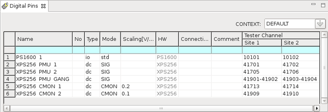

XPS256 current monitor
DC Scale XPS256 cards offer the functionality to monitor the output current of ganging groups via other XPS256 pins. The monitor output pins can be configured in such a way that they drive a voltage proportional to the total current of the assigned ganging group.
A monitor output pin can be used for example, to provide a voltage signal that is proportional to the total current of a ganging group to a thermal controller. In combination with an XPS256 safety line, the thermal controller can shutdown XPS256 channels in case the consumed power exceeds the limits.
The functionality can also be used to monitor the current for debugging by connecting an oscilloscope to the monitor output pin.
- The pin drives a voltage proportional to the total current of the assigned ganged XPS256 pin.
- The output current of an XPS256 channel used as monitor output pin is limited to ±10 mA.
- The monitor output pin can be assigned to ganged XPS256 pins in both the PMU operating mode and the DPS operating mode.
- A monitor output pin gets automatically connected or disconnected when the assigned ganged XPS256 pin is connected or disconnected.
- Multiple monitor output pins can be defined.
- Profiling the monitor output pins is not supported. Profiling can be done on the ganged XPS256 pin to which a monitor output pin is assigned.
XPS256 pins are configured as monitor output pin in the Digital Pins editor:

A configured monitor output pin needs to be assigned to a ganged XPS256 pin. The assignment must be configured in the DC Scale Safety editor.
- Each monitor output pin needs an XPS256 tester channel assigned per site. Sharing of tester channels between sites is not supported.
- A monitor output pin can be assigned to only one ganged XPS256 pin in the DC Scale Safety editor. Assigning a monitor output pin to more than one ganged XPS256 pin or to none‑ganged pins is not supported.
- For each site, an XPS256 channel used as monitor output pin must be on the same XPS256 card as the master channel of the assigned ganged pin1).
Functional changes
- Introduced in SmarTest 7.10.2